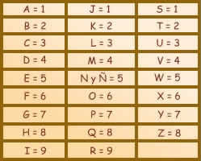

Para obtener el número que te corresponde por tu fecha de nacimiento es preciso que sumes todos los números, por ejemplo:
30 de junio año 2008
El año suma 10 (2+0+0+8) lo llevamos a un dígito o sea 1 a este número del
año le sumamos el mes o sea 1 + 6 del mes de junio = 7 Y por último le
sumamos el día (en este caso 30) = 37 es el resultado y al sumar 3 + 7 nos
da 10, al reducirlo a un dígito nos da 1
El número correspondiente a la fecha del 30 de junio de 2008 es Uno 1
Veamos otro ejemplo
24 de septiembre año 1994
Sumamos el año a una cifra (1+9+9+4) nos da 5 le sumamos el mes 5 + 9
(septiembre) = a 14 como me da un número de dos dígitos lo llevo a un
dígito sumandolos o sea 1 + 4 = 5 Y por último al día 24 le sumamos 5 y el
número resultante ...
es 29, lo llevamos a un dígito, sumamos 2 + 9 = 11.
El número correspondiente a la fecha 24 septiembre 1994 es un ONCE 11
Cuando nos da número final un 11, 22, 33, o 44.
Estamos ante un número maestro.
Si la persona obra desde el alma manifestara la maestría de ese número pero
si obra desde el ego se manifestará la energía correspondiente a la suma de
los dos dígitos.
Por ejemplo un 11 puede ser maestro de maestros o vibrar en un 2 que es
dualidad continua.

Con los nombres se deben convertir las letras a números de acuerdo a la
siguiente tabla:
Cada letra del alfabeto tiene un número asignado. Aquí se muestran dichos
valores para realizar los cálculos pertinentes. La letra “LL” como se puede
ver no consta, la debes contabilizar como si fueran dos “L”.
Cuando vaya sumando las cifras, recuerde que debe reducir hasta que la
cifra obtenida sea un número entre 1 y 9. P. ej: Si la suma de los dígitos
de tu nombre arroja un total de 16 deberás continuar reduciendo, es decir,
1+6 =7.
José: 1+6+1+5 = 13 (1+3=4)
Ángel: 1+5+7+5+3 = 21 (2+1=3)
A continuación, se suman los resultados de José (4) y los de Ángel (3) que
arrojan la cifra 7.
El número de José Ángel será el 7.
Luego de obtener los resultados de fecha de nacimiento y nombres busque las
descripciones de dichos números.